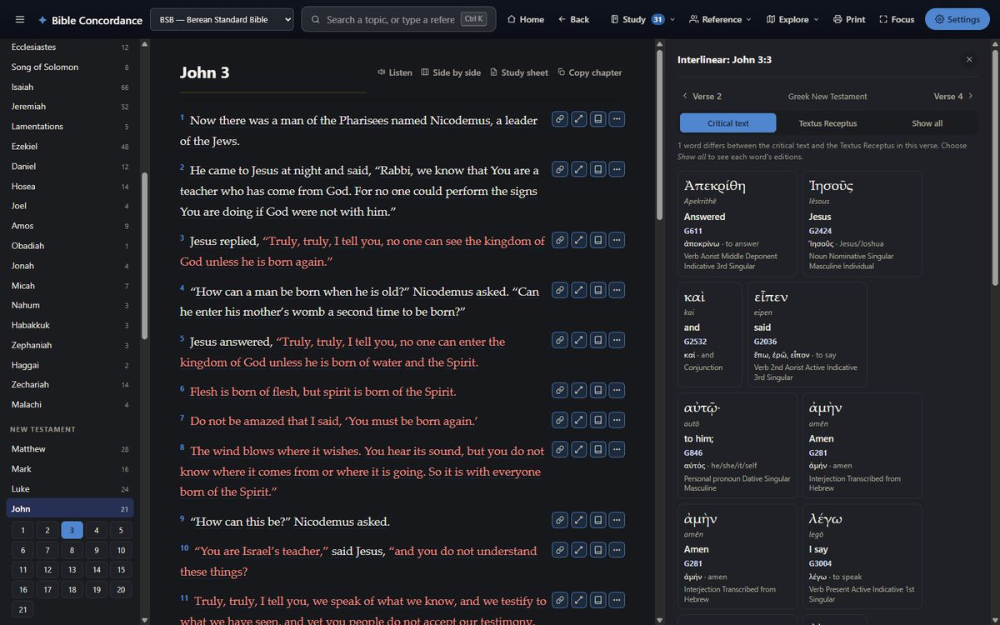
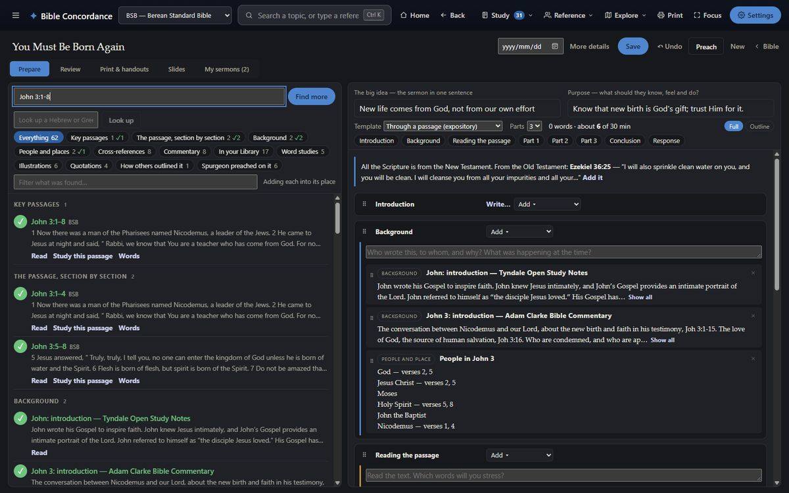
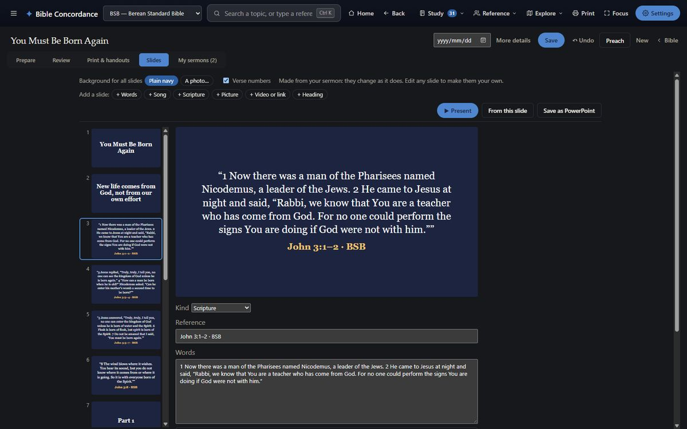
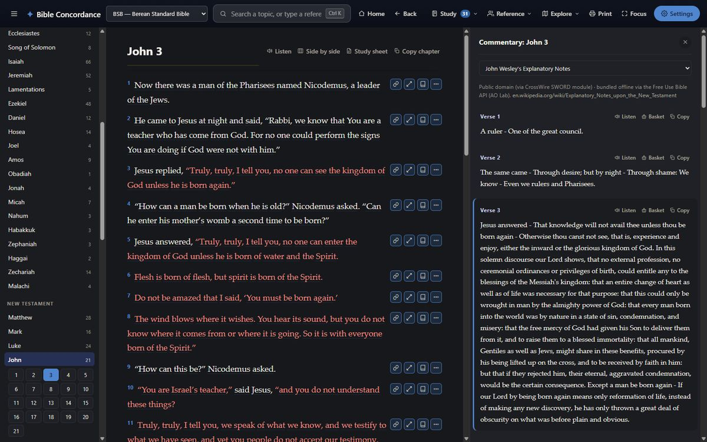
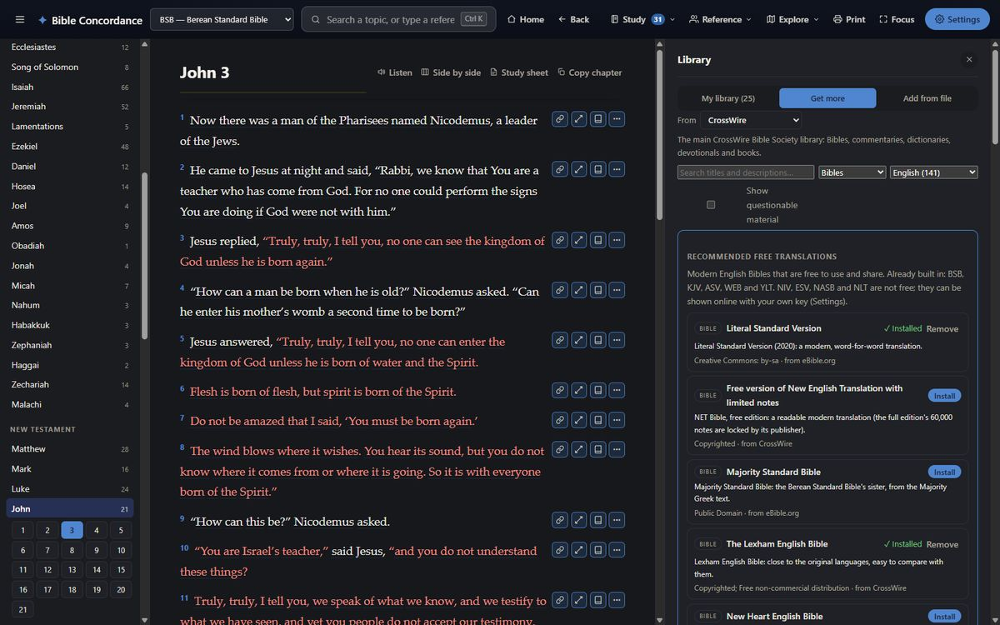

Bible Concordance for Windows
The full study app: everything works offline, on your own computer.
Download for Windows
Version 2.9.2 · Windows 10 / 11, 64-bit
First run: this installer isn't code-signed yet, so Windows SmartScreen may show a blue "Windows protected your PC" warning. Click More info, then Run anyway. The full source is public on GitHub if you'd like to see exactly what it does before installing.
After installing: the free extras
Everything works straight away. These extras are optional, and a Getting started window in the app shows where each one is (it's also under Settings).
- Natural reading voice — a one-time ~200 MB download: Settings → Read aloud. Until then, Listen uses Windows' own voice.
- Library — extra Bibles, commentaries, dictionaries, devotionals and books: Study → Library → Get more. Downloaded books appear under Books in the book list. Add from file takes e-Sword and MySword modules you have, too.
- Your phone — Settings → Keep in step → tick Let my phone sync, press Pair a phone, and type the code into the phone app. If Windows asks, allow the app on private networks.
- Bible pictures — choose the collections you want: Explore → Pictures → Download.
- NIV, NKJV and ESV — add your own free key from the publisher: Settings → Online translations.
Updating, and moving your notes
- The app checks for new versions and offers to install them. You can also download the newest installer here and install it over the old one; your notes stay.
- Your phone keeps in step over your home Wi-Fi (see above), and other computers through a folder they share (OneDrive, Google Drive, Dropbox, Synology): Settings → Keep in step.
- My Study → Export saves your notes, highlights, bookmarks and reading plans to a backup file. The same file can be restored in the Android app.
Screenshots





What's inside
Multiple translations
BSB, KJV, ASV, YLT, WEB, plus the original Hebrew (WLC) and Greek (TR, THGNT) texts, side by side in Compare.
Strong's word study
Click any tagged word for its Hebrew/Greek root, definition and exact occurrence count across the Bible.
Seven offline commentaries
Matthew Henry, Jamieson-Fausset-Brown, Adam Clarke, John Gill, Calvin, Keil & Delitzsch, and Tyndale Open Study Notes — full text, full-text search.
Keyword & meaning search
Exact phrase search, word-frequency counts, and a local semantic search that finds verses by meaning, not just matching words — no internet required.
Interactive map
Every geocoded place in the Bible, with an Ancient/Modern name toggle and a five-era historical-kingdom timeline you can scrub through.
People, places & events
A per-chapter index of everyone and everywhere mentioned, cross-linked with family relationships and every reference.
Cross-reference graph
An interactive, explorable web of related verses, colour-coded by testament, with prophecy/fulfilment links flagged.
Read aloud
A natural voice reads any chapter or Library book aloud, highlighting each sentence and scrolling along as it goes. Start from any verse or paragraph. A one-time download, then fully local.
My Study
Notes on a verse or a whole passage, with your own tags; highlights (with your own colour titles), bookmarks in the Bible and in your books, and reading plans, all kept locally and exportable as a backup.
Sermon builder
Type a subject or a passage and the app gathers Scripture, cross-references, commentary and the meaning of the Hebrew and Greek words. Arrange it in a template, review it, print handouts, keep a record of where you preached it, and show slides on the projector with a presenter view on your own screen. It gathers and lays out; the sermon is yours to write.
Free library
Download extra Bibles, commentaries, dictionaries, lexicons, devotionals and classic books from CrossWire, eBible.org and other free libraries — well over a thousand Bibles in many languages. Add your own EPUB or PDF books, and e-Sword or MySword modules, too.
Phone and computer in step
At home on your Wi-Fi, the phone app and this app keep your bookmarks, highlights, notes and reading plans the same. Other computers keep in step, sermons too, through a folder you share. No cloud account of ours.
Bible pictures
Gustave Doré, James Tissot and Sweet Publishing illustrations, each linked to its passage. Download only the collections you want.
Hebrew & Greek search
Find every place a Hebrew or Greek word is used, and narrow it by grammar — every aorist, every Piel, every genitive.
Side-by-side reading
Read a whole chapter in up to four translations at once, verse by verse.
Genealogies & Firsts
Hand-verified family trees from Adam to Jesus, plus a curated "Firsts & Milestones" index of biblical firsts, facts and promises.
Optional online extras
Add your own free key to compare against NIV, NKJV or ESV live — everything else works fully offline without one.
Printable & exportable
Print any chapter, build a custom study sheet from gathered verses, or export your notes and highlights as a backup.